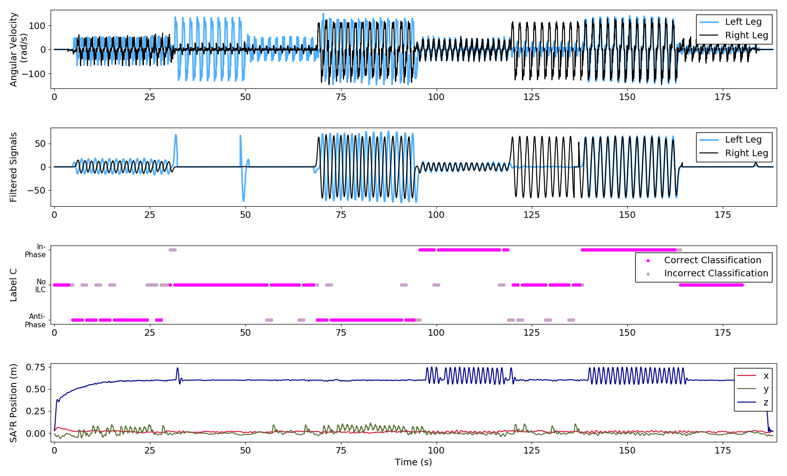
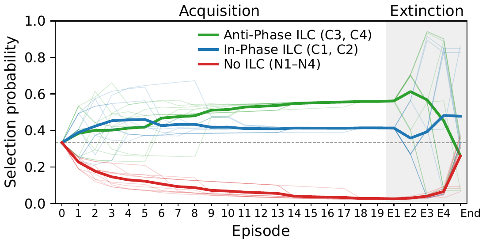
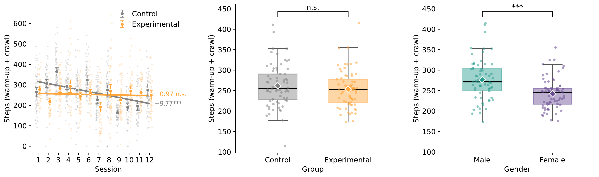
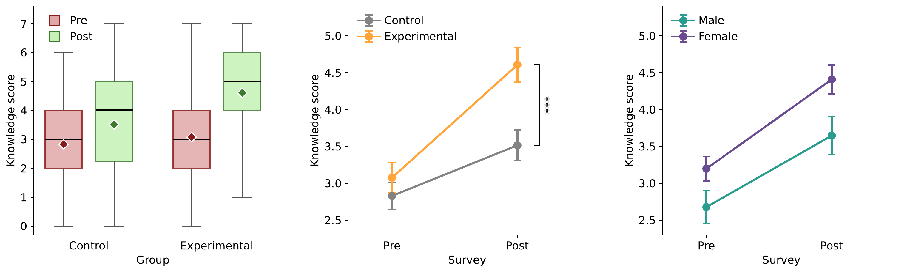

Air Force Research Laboratory (AFRL) · Sensors Directorate · Summer 2026
Scroll
Selected Works ↓
Selected Research & Teaching
Project Demos
001
Real-Time Sensing · HRI
NAO Humanoid–Aerial Robot Closed-Loop Communication
Interlimb coordination (ILC) is how the two legs move relative to each other: together (in-phase), alternating (anti-phase), or not coordinated at all. Leg-mounted IMUs stream angular velocity, and three real-time detectors — a moving-window algorithm, a Hilbert-transform phase detector, and an LSTM — classify the ILC mode as it happens. A socially assistive aerial robot (SA²R) responds to each mode: it rises and falls in place when the legs move in-phase and holds position otherwise. The NAO humanoid learns which cue to give next through tabular Q-learning with softmax action selection, closing the loop between the person, the NAO, and the aerial robot.

One session, end to end. Raw and filtered leg IMU signals (top), the detected coordination mode with correct and incorrect classifications (middle), and the aerial robot's position (bottom): its height oscillates only during in-phase bouts.

The NAO learns. Softmax selection probability for each coordination mode across episodes. During acquisition the humanoid converges on the rewarded in-phase cue; when the reward is removed (extinction), the preference decays.
Under review · Manuscript submitted to IEEE Transactions on Cognitive and Developmental Systems
002
Kinematics · Space
Train Like An Astronaut
A NAO humanoid leads a 12-session, astronaut-themed training program: it demonstrates and mirrors the exercises in real time and teaches the space science behind each one. Activity was measured with Fitbit step counts every session, and space knowledge with a questionnaire before and after the program. Compared with a control group that trained without the robot, participants who trained with the NAO held their activity level across all twelve sessions and learned more.

Keeping up the effort. Fitbit steps per session (warm-up + crawl). The control group's activity dropped over the twelve sessions; the group training with the NAO stayed flat. Right: overall steps by group and by gender.

Learning while training. Space-knowledge scores before and after the program. Both groups improved, but the group taught by the NAO gained significantly more. Right: the same gain split by gender.
003
Teaching · Robotics
Wall-Following Lab Challenge
Designed as a teaching assistant for Programming Practical Robots — guiding students through sensor-driven autonomous navigation.